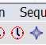
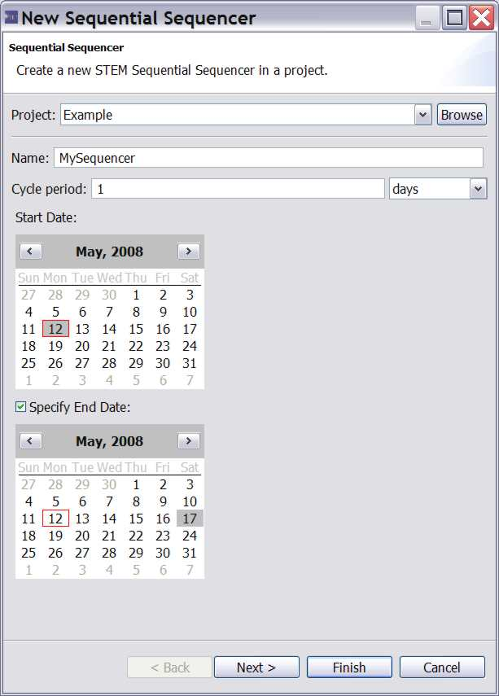
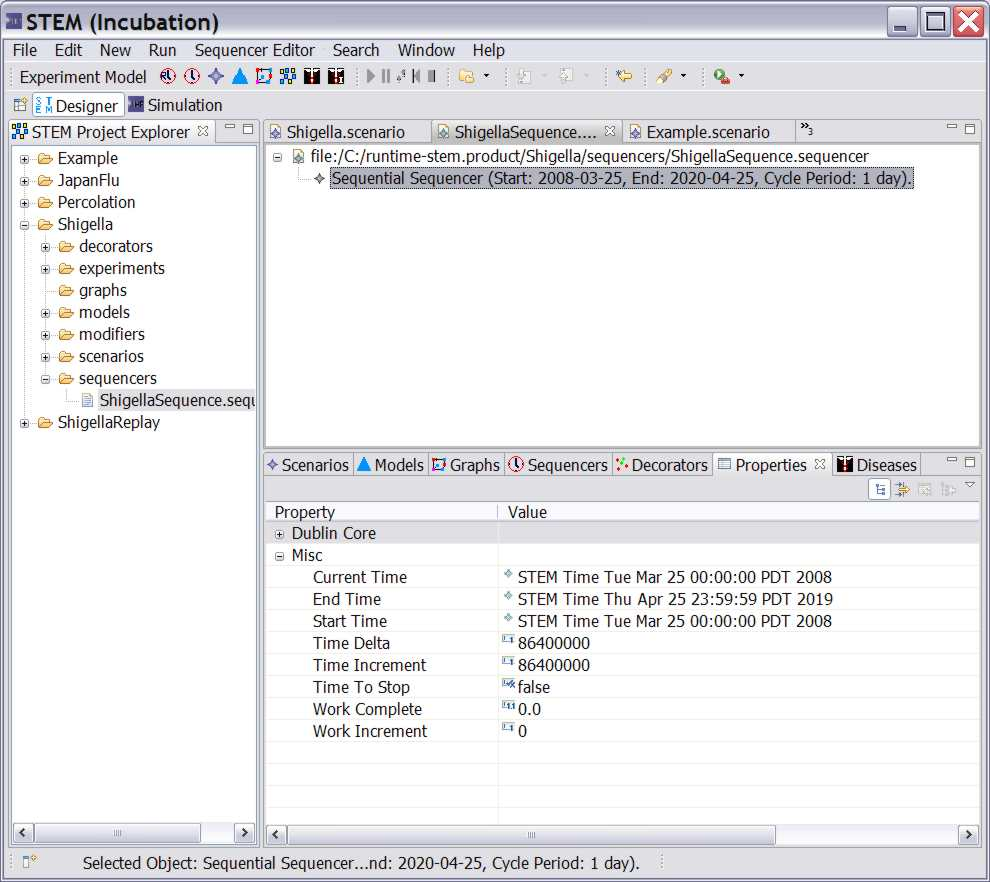

Every scenario must also include a "sequencer" which basically is a clock
that
regulates time, and an "infector" which sets the initial infectious population.
Stem has a build in default
sequencer called the "Sequential Sequencer" but you will no doubt want to create
your own to specify
start time, step size, end time, etc.
To create a new sequencer click on the New Sequencer Icon which appears as a
little clock.
Alternatively, on the menu bar you can select >NEW>SEQUENCER
|  |
| Figure 1: The New Sequencer Icon |
The "New Sequential Sequencer" Dialog will open as shown in figure 2 below.
Specify in which Project to put the Sequencer (it will always go in your
Sequencers folder).
Give it a name, and select the cycle period and unit. At this point in time STEM
only supports
constant time steps. In the future new Sequencers will be created that allow
variable time steps.
Select the starting date.
If you wish to specify and End Date be sure to check the "Specify End
Date" checkbox.
This check box MUST be set for the end date to be editable later.
You will then be allowed to set the End Date in the second calendar.
|  |
| Figure 2: The New Sequential Sequencer Dialog helps you configure a Sequencer. |
Once you have created your sequencer it must be dragged into your scenario
folder. Follow the instructions
under "Creating a Scenario". The
sequencer can be edited after creation by opening the scenario, selecting the
sequencer, and double clicking to open it in the "property editor" at the bottom
of the screen (See figure 3).
|  |
| Figure 3: Changing the sequencer in the property editor after it has been added to a scenario. |